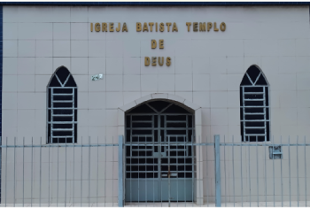

Igreja Batista Templo de Deus
Home
Quem Somos
Ministérios
Eventos
Contato
Ibura - SEDE

aqui para saber mais !
Vitória de Santo Antão - Filial
aqui para saber mais !
Portão do parque - Filial
aqui para saber mais !